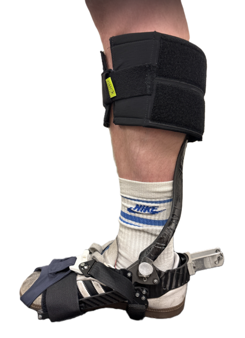
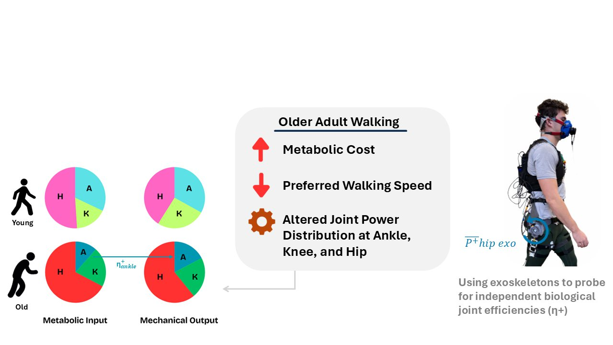

Ankle Exoskeleton
Device Design

Explore the device
Hover over a highlighted part of the exoskeleton, or pick one below, to see how it’s built.
- Shank Cuff
Rigid 3D-printed shank pads bonded to EVA foam and wrapped in sweat-proof faux-leather vinyl. The pads spread strap pressure across the muscle bellies of the shin, so the cuff holds firm without pressure points.
- PLA pads, loaded in compression
- EVA foam + vinyl
- Hook-and-loop closure
- Shank Strut
A carbon fiber strut that runs down the leg from the shank cuff to the ankle, linking the cuff to the rest of the frame.
- Carbon fiber
- Heel Cuff
A molded carbon fiber cuff that wraps the heel. Seven carbon plies are laid over a nylon insert, vacuum-bagged and cured, with separate left and right molds shaped around the ankle’s center of rotation.
- 7 carbon plies + nylon insert
- 186 °C · 8 hr cure
- Left & right molds
- Toe Strut
A carbon fiber strut that carries the frame forward along the side of the shoe toward the toe.
- Carbon fiber
- Under-Toe Bar
A carbon fiber bar that runs beneath the front of the shoe.
- Carbon fiber
- Toe Hammock
A snowshoe-inspired fabric strap that cradles the front of the shoe and keeps the foot from sliding forward under load.
- Taslan + spandex
Select a part to see its materials and design intent.
Thesis Project:
Exploring the Mechanisms for Age-Related Increase in Walking Cost Using Ankle and Hip Exoskeletons
